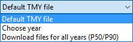

SAM can download weather files from the National Solar Radiation Database (NSRDB) Physical Solar Model (PSM) datasets:
•Type an address and click Download and add to library to download TMY (typical meteorological year) data.
•Check Advanced download and click Download and add to library to choose from all files available from the NSRDB for your location, including file with subhourly data, files for different years, and files from different datasets.
To download a TMY weather file for a single location:
1.Replace the text "Type a location name, street address or latitude and longitude" with a street address, city and state or country name, zip code, or latitude longitude pair. For example:
•Golden, Colorado
•golden, co
•15013 Denver West Parkway, Golden CO 80401
•80401
•thimpu, bhutan
2.Click Download and add to library.
For more instructions to download multiple files, see Weather File Download Instructions below.
SAM converts the address you type to a latitude and longitude pair for the location, and submits that information to the NSRDB along with your email address. If the location is in the region covered by the NSRDB, it returns a weather file in the SAM CSV format, and adds it to your weather file download folder. Otherwise, it displays a message telling you the location is not covered by the NSRDB.
When you first install SAM, it creates the SAM Downloaded Weather Files folder and assigns it as your weather file download folder. You can change the weather file download folder by clicking Add/Remove weather file folders. See Folders and Libraries for details.
When the download finishes, SAM displays a prompt asking you if you want to open the weather file download log. This prompt is the indication that the download finished. During the download and before that prompt appears, SAM may become unresponsive. If it does, wait for the prompt to avoid interrupting the download.
The weather file download log is a text file that SAM creates in your weather file download folder, and serves as a record of all of the files you download from the NSRDB. For each download, it lists the date and time of the request, the information you provided, the URL SAM generated, the name of the file returned by the NSRDB, or error messages it returns if the download fails. This information is useful for troubleshooting weather file download problems.
Note. Downloading multiple weather files from the NSRDB can take a long time. If you download files for multiple locations or years, be prepared to wait for the files to download. The download log file reports the time it takes for each file to download. Download times depend on your internet connection and computer. For a new computer with a fast connection, downloading and processing a single file takes about 10 seconds.
One location, Multiple locations
Choose One location to download a weather file for a single location.
Choose Multiple locations to submit a list of locations and download a file or files for each location. For Multiple locations, click Edit data to open the Edit Data window where you can enter the list of locations and click Number of Values to enter the number of locations in the list.
60-minute, 30-minute
Choose 60-minute to download weather files with hourly time steps or 8,760 data records.
Choose 30-minute to download files with 30-minute time steps or 17,520 data records. Thirty-minute data is not available for the NSRDB SUNY International dataset.
Download options

Default TMY file
Download a typical meteorological year weather file for the location or locations you specified.
Typical year data is appropriate when you are using simulation results for a single year to make cash flow calculations over a multi-year period.
Choose year
Choose a single year file to download. After you click the Download button, SAM prompts you with a list of available years for each location you requested to choose a year.
The single year option is appropriate when you want to see how the system would perform in a particular year. For example, for a residential or commercial system, if you have measured building load data for a given year, you could use weather data for the same year to see how the system's power output compares to the load.
If you use both Choose year and Multiple locations, SAM prompts you for a year for each location.
SAM queries the NSRDB to generate the list of available years. The list of available years varies between regions.
Download files for all years (P50/P90)
Download a set of single-year files covering the range of historical data (nineteen files for 1998 through 2017 as of October 2018 for PSM data). When you click download, SAM creates a folder in your weather file download folder to store the single year files based on the location address or latitude-longitude pair you typed. It also downloads the typical meteorological year (TMY) file for the location and stores it in your weather file download folder.
SAM appends an underscore with the year to the file name so that the P50 P90 simulations work correctly. See P50/P90 Simulations for details.
If you choose to download files for all years with Multiple locations, SAM downloads a set of files for each location, and puts the files for each location in a separate folder. Note that this may take a long time.
Weather File Download Instructions
Examples of valid street address or latitude-longitude pairs:
•golden colorado
•golden, co
•15013 Denver West Parkway, Golden CO 80401
•80401
•39.75, -105.15
•Super Market, F-6 Markaz, Islamabad, Pakistan
•New Delhi, India
Note. When the download finishes, SAM displays a prompt asking you if you want to open the weather file download log. This prompt is the indication that the download finished. During the download and before that prompt appears, SAM may become unresponsive. If it does, wait for the prompt to avoid interrupting the download.
To download an hourly typical-year (TMY) weather file from the NSRDB (use this option for most situations):
1.Click One location.
2.Type either a street address or latitude-longitude pair.
3.Click 60-minute.
4.Choose Default TMY File.
5.Click Download and add to library.
To download files for more than one location:
1.Click Multiple locations.
2.Click Edit data.
3.In the Edit Data window, click Number of Values and type the number of locations to create a table with a row for each location.
4.Type a street address or latitude-longitude pair in the table for each location.
5.Click OK.
6.Choose a time step, 60-minute for hourly, or 30-minute for 30-minute data.
7.Choose the type of file(s) you want to download as described below.
8.Click Download and add to library. |